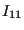
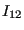
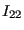

Next: Fluid Section Types: Gases Up: Beam Section Types Previous: Box Contents
The general section can only be used for user element type U1 and is defined by the following properties (to be given by the user in that order):



Furthermore, the specification of the 1-direction (cf. third line in the *BEAM SECTION definition) is REQUIRED for this type of section. Internally, the properties are stored in the prop-array in the following order:
In the present implementation of the U1-type element , offset1 and offset2 have to be zero.